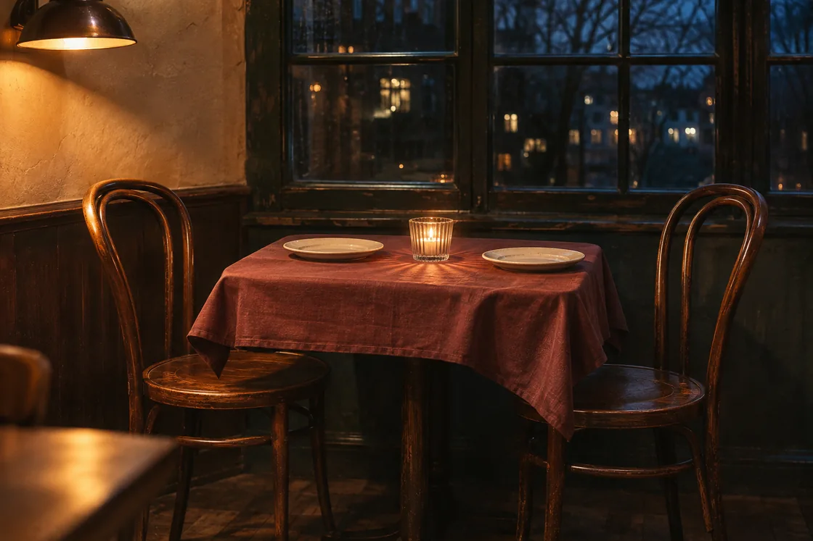

第一幕 / 黑胶序曲
The Night
We Haven’t
Written Yet.
有些故事，从一顿晚餐开始。
约 1 分钟
正在打开封套…
RICKY RECORDS第二幕 / 写给你的信
Yours,

第三幕 / 晚餐门票
One evening.
Two seats.
轻点门票，翻看背面
第五幕 / 你的回应
Shall we make
this one happen?
要不要，让这个故事真的发生？
第六幕 / 纪念票根
手机可长按上方票根保存图片
We don't know the ending yet.
But I'd love to see how this chapter begins.
But I'd love to see how this chapter begins.
我们还不知道故事的结局。
但我很想知道，和你有关的这一章，会怎样开始。